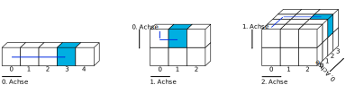

print( *( Augen := [6, 2, 1, 2] ) )6 2 1 2print(f"Das Würfelergebnis an Indexposition 2 lautet: {Augen[2]}")Das Würfelergebnis an Indexposition 2 lautet: 1
Bausteine Computergestützter Datenanalyse von Lukas Arnold, Simone Arnold, Florian Bagemihl, Matthias Baitsch, Marc Fehr, Maik Poetzsch und Sebastian Seipel. Methodenbaustein Einlesen strukturierter Datensätze von Maik Poetzsch ist lizensiert unter CC BY 4.0. Das Werk ist abrufbar auf GitHub. Ausgenommen von der Lizenz sind alle Logos und anders gekennzeichneten Inhalte. 2024
Zitiervorschlag
Arnold, Lukas, Simone Arnold, Matthias Baitsch, Marc Fehr, Maik Poetzsch, und Sebastian Seipel. 2024. „Bausteine Computergestützter Datenanalyse. Methodenbaustein Einlesen strukturierter Datensätze“. https://github.com/bausteine-der-datenanalyse/m-Einlesen-strukturierter-Datens-tze.
BibTeX-Vorlage
@misc{BCD-m-einlesen-strukturierter-datensätze-2024,
title={Bausteine Computergestützter Datenanalyse. Methodenbaustein Einlesen strukturierter Datensätze},
author={Arnold, Lukas and Arnold, Simone and Baitsch, Matthias and Fehr, Marc and Poetzsch, Maik and Seipel, Sebastian},
year={2024},
url={https://github.com/bausteine-der-datenanalyse/m-Einlesen-strukturierter-Datens-tze}} Die Bearbeitungszeit dieses Bausteins beträgt circa Platzhalter. Für die Bearbeitung dieses Bausteins werden folgende Bausteine vorausgesetzt und die genannten Bibliotheken verwendet:
Werkzeugbaustein Python
Im Baustein werden XY Daten verwendet.
In diesen Baustein lernen Sie …
Am Beginn der Datenanalyse steht das Einlesen von Daten aus Dateien oder aus Datenbanken, um diese für die Auswertung verfügbar zu machen. In der Praxis ist das Einlesen von Daten alles andere als trivial. 2016 stellte eine Studie fest, dass ein Fünftel aller wissenschaftlichen Artikel im Bereich der Genetik auf der Grundlage von durch die Tabellenkalkulation Excel verfälschten Daten durchgeführt wurde ((Ziemann, Eren, und El-Osta 2016)). Genbezeichnungen wie “MARCH1” wurden fälschlicherweise in ein Datumsformat umgewandelt. 2021 wurde diese Schätzung des Anteils betroffener Arbeiten sogar auf 30 Prozent angehoben. (heise online)
“Tidy datasets are all alike, but every messy dataset is messy in its own way.” Hadley Wickham
(Wickham, Çetinkaya-Rundel, und Grolemund 2023, Kap. 5 Data tidying)
Häufig werden Daten nicht selbst erstellt, sondern von externen Quellen bezogenen, sodass das Format und der innere Aufbau von Datensätzen nicht selbst bestimmt werden können. Deshalb ist es in der Datenanalyse erforderlich, mit verschiedenen Dateiformaten umgehen zu können: mit wenigen Kilobyte großen Textdateien, proprietären Formaten gängiger Büroanwendungen und mehreren hundert Megabyte großen Dateien in für den Austausch wissenschaftlicher Daten entwickelten Formaten. Programmiersprachen wie Python und R bringen verschiedene Werkzeuge zum Lesen, Bearbeiten und Speichern von verschiedenen Dateiformaten mit, die durch spezialisierte Pakete ergänzt werden können.
Die praktischen Herausforderungen der Datenanalyse beschränken sich jedoch nicht nur auf technische Aspekte. Oftmals bereitet der innere Aufbau von Datensätzen die größten Schwierigkeiten. Dasu und Johnson schreiben:
“Unfortunately, the data set is usually dirty, composed of many tables, and has unknown properties. Before any results can be produced, the data must be cleaned and explored—often a long and difficult task. […] In our experience, the tasks of exploratory data mining and data cleaning constitute 80% of the effort that determines 80% of the value of the ultimate data mining results.”
((Dasu und Johnson 2003), S. ix)
Ein wichtiger Bestandteil des Einlesens strukturierter Datensätze besteht deshalb darin, Fehler im Datensatz zu suchen und ggf. zu bereinigen. Unter dem Begriff des Einlesens strukturierter Datensätze wird der gesamte Prozess des Einlesens, der Fehlersuche und -korrektur und des Abspeicherns in für die weitere Bearbeitung geeigneter Form gefasst.
Bevor wir uns mit den praktischen Herausforderungen des Einlesens strukturierter Datensätze beschäftigten, werden zunächst einige Merkmale von Datensätzen diskutiert, um ein grundlegendes Verständnis der Begrifflichkeiten zu schaffen und den Umgang der in der Basis von Python bzw. R enthaltenen Werkzeuge zu vermitteln.
Ein Datensatz ist eine Sammlung zusammengehöriger Daten. Datensätze enthalten einer oder mehreren Variablen zugeordnete Werte. Jeder Datensatz besitzt ein technisches Format, eine Struktur, mindestens eine Variable und mindestens einen Wert.
Das technische Format gibt vor, mit welchen Mitteln Daten eingelesen, bearbeitet und gespeichert werden können. Einige Beispiele sind:
Druckerzeugnis, z. B. Telefonbuch: manuelles Ablesen von Name und Telefonnummer, irreversible Bearbeitung per Stift
Lochkarte, z. B. Parkschein: Lesegerät erkennt Lochung und gewährt eine Freistunde, irreversible Bearbeitung mit Stanzgerät
Textdatei, z. B. Einwohnerzahl nach Bundesländern: Kann mit einer Vielzahl von Computerprogrammen wie Texteditor, Tabellenkalkulationsprogramm oder Programmierumgebung eingelesen, bearbeitet und gespeichert werden.
Hierarchical Data Format HDF5, z. B. räumliche Daten zur Blitzdichte: benötigt spezialisierte Programme oder Pakete
Diesen Teil als seperates .md Dokument einbinden, dann kann das im w-Python rezykliert werden. Hier anmerken, dass man den Teil überspringen kann, wenn man bereits Daten mit base-Python oder base-R eingelesen bzw. w-Python bearbeitet hat.
Datensätze speichern Daten in einer definierten n-dimensionalen Struktur. Die einfachste Form sind eindimensionale Datensätze, die in einer Liste Werte einer einzigen Variablen zuordnen. Eindimensionale Datensätze verfügen lediglich über einen Achse: den Index, über den Elemente angesprochen werden können.

slicing von Marc Fehr ist lizensiert unter CC-BY-4.0 und abrufbar auf GitHub. Die Grafik wurde auf den gezeigten Teil beschnitten und die obenstehende Beschriftung entfernt. 2024
Beispiele eindimensionaler Datensätze sind ein Einkaufszettel oder die Urliste eines Würfelexperiments. Über den Index kann beispielsweise das Würfelergebnis an der Indexposition 2 ausgegeben werden.
print( *( Augen := [6, 2, 1, 2] ) )6 2 1 2print(f"Das Würfelergebnis an Indexposition 2 lautet: {Augen[2]}")Das Würfelergebnis an Indexposition 2 lautet: 1Maya und Hans haben je sechs Mal einen Würfel geworfen und ihre Wurfergebnisse in einer .txt-Datei protokolliert. Sie sollen die Dateien auswerten, um zu bestimmen, wer von beiden in Summe die höchste Augenzahl erreicht hat.
| Daten | Dateiname |
|---|---|
| Würfelergebnisse Maya | dice-maya.txt |
| Würfelergebnisse Hans | dice-hans.txt |
Border + Quellennachweis Simone Arnold: Vorlesung Datenanalyse mit Python. 03 Funktionen. Fachhochschule Dortmund
Um auf eine Datei zuzugreifen, muss diese fürs Lesen oder Schreiben geöffnet werden. Dazu wird in Python die Funktion open verwendet. Diese nimmt zwei Argumente, den Pfad der Datei und den Zugriffsmodus, an und liefert ein Dateiobjekt zurück. Aus diesem Objekt werden dann die Inhalte der Datei ausgelesen.
Dateipfad
Der lokale Dateipfad wird ausgehend vom aktuellen Arbeitsverzeichnis angegeben.
pfad_maya = "skript/01-daten/dice-maya.txt"
pfad_hans = "skript/01-daten/dice-hans.txt"Der Pfad des aktuellen Arbeitsverzeichnisses kann mit dem Modul os mittels os.getcwd() ermittelt werden.
import os
print(os.getcwd())Zugriffsmodus
Als Zugriffsmodus stehen unter anderem folgende Optionen zur Verfügung:
| Modus | Beschreibung |
|---|---|
r |
lesender Zugriff |
w |
Schreibzugriff, Datei wird überschrieben |
x |
Erzeugt die Datei, Fehlermeldung, wenn die Datei bereits existiert |
a |
Schreibzugriff, Inhalte werden angehängt |
b |
Binärmodus (z. B. für Grafiken) |
t |
Textmodus, default |
Die Zugriffsmodi können auch kombiniert werden. Weitere Informationen dazu finden Sie in der Dokumentation. Sofern nicht im Binärmodus auf Dateien zugegriffen wird, liefert die Funktion open den Dateiinhalt als string zurück.
Im Lesemodus wird ein Datenobjekt erzeugt.
daten_maya = open(pfad_maya, mode = 'r')
print(daten_maya)<_io.TextIOWrapper name='skript/01-daten/dice-maya.txt' mode='r' encoding='cp65001'>Daten ausgeben
Wenn das Datenobjekt daten_maya der Funktion print() übergeben wird, gibt Python die Klasse des Objekts zurück, in diesem Fall also _io.TextIOWrapper. Diese Klasse stammt aus dem Modul io und ist für das Lesen und Schreiben von Textdateien zuständig. Ebenfalls werden der Dateipfad, der Zugriffsmodus und die Enkodierung der Datei ausgegeben. cp65001 ist in Windows (dem Betriebssystem, auf dem dieser Baustein erstellt wurde) eine Kodierung für UTF-8. Sollte dies nicht automatisch erfolgen, kann eine Kodierung in UTF-8 auch mit dem Argument encoding='UTF-8' übergeben werden. Die Attribute der Datei können mit entsprechenden Befehlen abgerufen werden.
print(f"Dateipfad: {daten_maya.name}\n"
f"Dateiname: {os.path.basename(daten_maya.name)}\n"
f"Datei ist geschlossen: {daten_maya.closed}\n"
f"Zugriffsmodus: {daten_maya.mode}")Dateipfad: skript/01-daten/dice-maya.txt
Dateiname: dice-maya.txt
Datei ist geschlossen: False
Zugriffsmodus: rUm den Dateiinhalt auszugeben, kann die Datei mit einer Schleife zeilenweise durchlaufen und ausgegeben werden. (Die Datei daten_maya hat nur eine Zeile.)
i = 0
for zeile in daten_maya:
print(f"Inhalt Zeile {i}, mit {len(zeile)} Zeichen:")
print(zeile)
i += 1Inhalt Zeile 0, mit 28 Zeichen:
"5", "6", "2", "1", "4", "5"Dies ist jedoch für größere Dateien nicht sonderlich praktikabel. Die Ausgabe einzelner Zeilen mit der Funktion print() kann aber nützlich sein, um die genaue Formatierung der Zeichenkette zu prüfen. In diesem Fall hat Maya ihre Daten in Anführungszeichen gesetzt und mit einem Komma voneinander getrennt.
Beim Einlesen goßer Datensätze sollten nicht nur die erste(n) Zeile(n) des Datensatzes, sondern auch Ausschnitte aus der Mitte und dem Ende kontrolliert werden. Dies hilft, Fehler etwa bei der Umwandlung von Dezimal- und Tausendertrennzeichen, des Datumsformats oder eine unerwartete Anzahl fehlender Werte und sonstige Auffälligkeiten zu identifizieren.
Daten einlesen
Um den gesamten Inhalt einer Datei einzulesen, kann die Methode datenobjekt.read() verwendet werden. Die Methode hat als optionales Argument .read(size). size wird als Ganzzahl übergeben und entsprechend viele Zeichen (im Binärmodus entsprechend viele Bytes) werden ggf. bis zum Dateiende ausgelesen.
augen_maya = daten_maya.read()
print(f"len(augen_maya): {len(augen_maya)}\n\n"
f"Inhalt der Datei augen_maya:\n{augen_maya}")len(augen_maya): 0
Inhalt der Datei augen_maya:Das hat offensichtlich nicht geklappt, der ausgelesene Dateiinhalt ist leer! Der Grund dafür ist, dass beim Lesen (und beim Schreiben) einer Datei der Dateizeiger die Datei durchläuft. Nachdem die Datei daten_maya im Abschnitt “Daten ausgeben” zeilenweise ausgegeben wurde, steht der Dateizeiger am Ende der Datei.
Wird eine Datei zeilenweise oder mit der Methode .read() ausgelesen, wird der Dateizeiger um die angegebene Zeichenzahl bzw. bis ans Ende der Datei bewegt. Wird beispielsweise ein Datensatz ‘daten’ geöffnet und mit der Methode daten.read(3) die ersten drei Zeichen ausgelesen, bewegt sich der Dateizeiger von der Indexposition 0 zur Indexposition 3 (bzw. steht jeweils davor).


Die Methode daten.tell() gibt zurück, an welcher Position sich der Dateizeiger befindet.
Mit der Methode daten.seek(offset, whence = 0) wird der Zeiger an eine bestimmte Position gesetzt. Die Methode akzeptiert das Argument offset (Versatz) und das optionale Argument whence (woher), dessen Standardwert 0 (Dateianfang) ist. Für Zugriffe im Binärmodus (open(pfad, mode = 'rb')) kann das Argument whence außerdem die Werte 1 (aktuelle Position) oder 2 (Dateiende) annehmen.
daten.seek(0, 0) bezeichnet den Dateianfang
daten.seek(0, 1) bezeichnet die aktuelle Position in der Datei
daten.seek(0, 2) bezeichnet das Dateiende
daten.seek(-3, 2) bezeichnet das dritte Zeichen vor dem Dateiende
Wird der Dateizeiger mit der Methode datenobjekt.seek(0) an den Dateianfang gestellt, gelingt das Auslesen der Datei.
print(f"Position des Dateizeigers vor dem Zurücksetzen auf 0: {daten_maya.tell()}")
daten_maya.seek(0);
print(f"Position des Dateizeigers nach dem Zurücksetzen auf 0: {daten_maya.tell()}")
augen_maya = daten_maya.read()
print(f"Inhalt des Objekts augen_maya:\n{augen_maya}")Position des Dateizeigers vor dem Zurücksetzen auf 0: 28
Position des Dateizeigers nach dem Zurücksetzen auf 0: 0
Inhalt des Objekts augen_maya:
"5", "6", "2", "1", "4", "5"Geben Sie aus dem Datenobjekt daten_maya mit den Methoden .seek() und .read() die Zahlen and zweiter und dritter Stelle, also 6 und 2, aus.
daten_maya.seek(6, 0);
print(daten_maya.read(1))6daten_maya.tell()7daten_maya.seek(daten_maya.tell() + 4, 0);
print(daten_maya.read(1))2Um Mayas Würfelergebnisse zu addieren, müssen die Zahlen extrahiert und in Ganzzahlen umgewandelt werden, da im Textmodus stets strings zurückgegeben werden.
print(type(augen_maya))<class 'str'>Dazu werden mit der Methode str.strip(") das führende und abschließende Anführungszeichen entfernt sowie anschließend mit der Methode str.split('", "') der String in eine Liste aufgeteilt.
print(f"augen_maya:\n{augen_maya}")
augen_maya = augen_maya.strip('"')
print(f"\naugen_maya.strip('\"'):\n{augen_maya}")
augen_maya = augen_maya.split('", "')
print(f"\naugen_maya.split('\", \"'):\n{augen_maya}")
augen_maya_int = []
for i in augen_maya:
augen_maya_int.append(int(i))
print(f"\naugen_maya_int:\n{augen_maya_int}\t\tSumme Augen: {sum(augen_maya_int)}")augen_maya:
"5", "6", "2", "1", "4", "5"
augen_maya.strip('"'):
5", "6", "2", "1", "4", "5
augen_maya.split('", "'):
['5', '6', '2', '1', '4', '5']
augen_maya_int:
[5, 6, 2, 1, 4, 5] Summe Augen: 23Datei schließen
Nach dem Zugriff auf die Datei, muss diese wieder geschlossen werden, um diese für andere Programme freizugeben.
daten_maya.close()Das Schließen einer Datei ist besonders für Schreiboperationen auf Datenobjekten wichtig. Andernfalls kann es passieren, dass Inhalte mit datenobjekt.write() nicht vollständig auf den Datenträger geschrieben werden. Siehe dazu die Dokumentation.
Welche Augenzahl hat Hans erreicht?
Die Musterlösung kann Marc machen
https://stat.ethz.ch/Teaching/WBL/R-Einstieg/Daten_Einlesen_mit_R.pdf
R-Befehl geeignet für wichtige Argumente
read.table() .txt .dat header=TRUE/FALSE, sep= , dec= , fill=TRUE
read.csv() .csv header=TRUE/FALSE, sep= , dec=
scan() .txt .dat . . . file= , what= , header=T/F, sep= , skip= , fill=T/F
Der Pfad des aktuellen Arbeitsverzeichnisses kann mit dem Befehl getwd() ermittelt werden.
print(getwd())Die meisten Datensätze sind zweidimensional. Die Werte sind in einer aus Zeilen und Spalten bestehenden Matrix organisiert. Typischerweise entspricht jede Spalte einer Variablen, und jede Zeile einer Beobachtung. Variablen speichern alle Werte eines Merkmals, zum Beispiel des Würfelergebnisses. Beobachtungen speichern alle Werte, die für eine Beobachtungseinheit gemessen wurden, z. B. für eine Person.
| Name | Geburtstag | Lieblingsfarbe | Summe Augen |
|---|---|---|---|
| Hans | 26.02. | rosa | 12 |
| Elke | 14.03. | rosa | 22 |
| Jean | 30.12. | blau | 8 |
| Maya | 07.09. | gelb | 17 |
To Do: png verwenden, fig-alt

slicing von Marc Fehr ist lizensiert unter CC-BY-4.0 und abrufbar auf GitHub. 2024
Kasten Unterschied Format und Struktur, sieht man gut am long- und wide-Format –> potenzielle Begriffskollission zwischen technischem Format und long- und wide-Format
Datensätze können auch drei- oder mehrdimensional aufgebaut sein.
Mehrdimensional: z. B. Messung an verschiedenen Zeitpunkten oder an verschiedenen Orten 2 Tabellen nebeneinander: Würfelergebnisse und eine Lieblingsfarbe haben sich geändert
| Name | Geburtstag | Lieblingsfarbe | Summe Augen |
|---|---|---|---|
| Hans | 26.02. | rosa | 12 |
| Elke | 14.03. | rosa | 22 |
| Jean | 30.12. | blau | 8 |
| Maya | 07.09. | gelb | 17 |
| Name | Geburtstag | Lieblingsfarbe | Summe Augen |
|---|---|---|---|
| Hans | 26.02. | rosa | 14 |
| Elke | 14.03. | rosa | 9 |
| Jean | 30.12. | blau | 21 |
| Maya | 07.09. | gelb | 13 |
Wir können uns eine vierte Dimension für diese Daten vorstellen, die die Person codiert, die die Messung beaufsichtigt und den Teildatensatz erstellt hat. Format, Struktur, Variablen, Werte.
Format und Struktur: Unterschied
Hinweiskasten zum Unterschied von Format und Struktur Datensätze unterscheiden sich hinsichtlich ihres Formats (Format unterscheidet sich von Dimensionalität dadurch: Ein dreidimensionaler Datensatz kann in einer Tabellenkalkulation gespeichert in Form einer Matrix (dim = 2) gespeichert werden, die dritte Dimension wird über die Anzahl der Tabellenblätter abgebildet. Es ist aber auch möglich, dreidimensionale Daten in einer einfachen Textdatei zu speichern. data =[ [[1, 2, 3], [2, 3, 1], [3, 2, 1]], [Liegestütze, Kniebeuge, Hock-Streck-Sprünge], [morgens, mittags, abends], [Claus, Petra, Hans]]), ihrer Struktur, d
Zusätzlich B
Tidy Data
Datensätze bestehen aus mindestens einer Variablen, mindestens einem Wert und entweder aus einem Index oder einer Anzahl von Beobachtungen.
Variable, Wert und Beobachtungen ausführen nach Wickham 2014 Tidy Data, S. 3 https://vita.had.co.nz/papers/tidy-data.pdf
Index selbst formulieren: (Wenn Werte keinem Merkmalsträger zugeordnet sind, haben Sie einfach nur einen Index, z. B. Wert an Position 2)
besteht aus mindestens einer Variablen, mindestens einem Wert und können außerdem auch Beobachtungen enthalten. Beobachtungen
Außerdem
:::
Datensätze sind Objekte mit einer definierten Struktur. 1-dimensional, 2-dimensional, mehrdimensional
numerisch, character, factor, boolean, datetime usw. …
nix, NA, NaN, –, -1
: man muss nur das Trennzeichen kennen Semikolon Komma: “1”, “2”, “2,5”
masked Arrays
eindimensionaler Datensatz: Urliste von Ergebnissen eines Münzwurfs. Woraus besteht ein Datensatz?
Dazu gehört die Trennung von Rohdaten, Metadaten, Grafiken und anderer gestalterische Elemente.
disziplinäre Konventionen und persönliche Vorlieben (z. B. zur Kennzeichnung fehlender oder ungültiger Werte) ein “NA” führt leicht dazu, dass ein numerischer Datensatz als Zeichenkette erkannt wird.
Jeder Datensatz ist anders
oder Zitat von Hadley Wickham Techniken werden in diesem Baustein vermittelt
Dafür gibt es spezialisierte Pakete.
Das
Lesen, bearbeiten, speichern
technisch: Dateiformate, Dateigröße von wenigen Kilobyte bis mehreren hundert Megabyte oder mehr.
Nicht nur gibt es viele Dateiformate, in denen
eindimensionale Daten: Einkaufszettel - eine einfache Liste
Trennzeichen Komma, Semikolon, Tab
Viele unterschiedliche Datenformate von einer einfachen, mit dem Editor Textdatei, über CSV bis hin zu spezialisierten Datencontainern.
“everybody I know has war stories about cleaning up lousy datasets”
Nicholas J. Cox
Cox, Nicholas J. 2004: Exploratory Data Mining and Data Cleaning. Book Review 9. In: Journal of Statistical Software 2004, Volume 11. https://www.jstatsoft.org/article/view/v011b09/30
https://www.heise.de/news/Excel-wandelt-Genbezeichnungen-in-Datumsangaben-um-Problem-groesser-als-gedacht-6165902.html
Dateipfad feststellen (lokal, im Internet), durch Verzeichnisse navigieren
slash / und backslash nach Betriebssystem (Win, Linux, Mac) und Programmiersprache (Python und R)
Inhalt (gerne abwechslungsreich gestalten)
Theorie
Beispiele
Übungen
Kompetenzquiz (ggf. aufklappbarer Callout Block, Textverweis für PDF, polierte Lösungen evntl. via Lumi später entscheiden)
Übungsaufgaben (kleine Projekte)
Prüfungsaufgaben (ohne Lösungen)